5.3 Transition Metal Reactions · Topic 17
Redox chemistry, ligand exchange and catalysis
5.3 Transition Metal Reactions · Topic 17
本页对应 5.3 Transition Metal Reactions.pdf.pdf，范围为 Pearson Edexcel International Advanced Level Chemistry specification 的 Topic 17: Transition Metals and their Chemistry（17.18–17.24, 17.26–17.33）。解释采用中文，专业词汇保留 English，便于和 Data Booklet、redox tables、reaction schemes 及 exam wording 对照。
Learning objectives
学完本页后，你应该能够：
- use
E°data to explain vanadium / chromium interconversions and chromate-dichromate equilibrium； - write observations and ionic equations for transition-metal ions with sodium hydroxide and ammonia；
- explain ligand exchange、deprotonation 和 amphoteric behaviour；
- explain heterogeneous、homogeneous 和 autocatalysis，并完成 Core Practical 14 的 planning points。
17.18-17.21 Vanadium and chromium redox chemistry
Vanadium oxidation states and colours
Vanadium 常见 oxidation states：+2 purple、+3 green、+4 blue、+5 yellow。Zinc 在 acidic solution 中作为 reducing agent，可将 vanadium(V) 逐步 reduce：yellow → blue → green → purple。
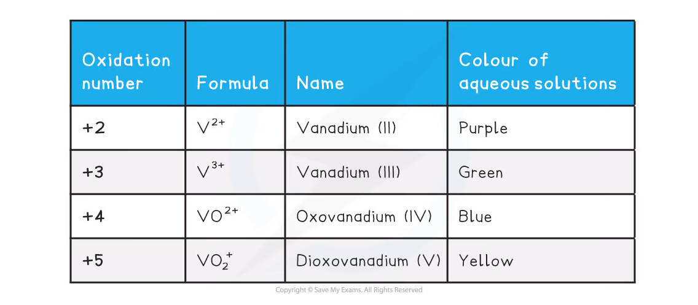
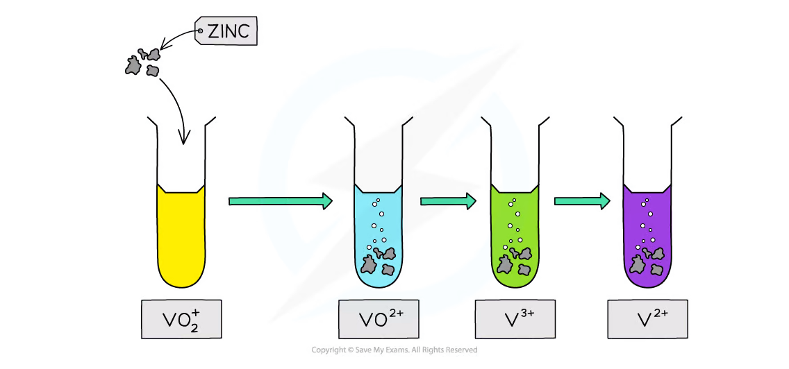
Using E° to predict vanadium interconversion
Relevant reduction potentials include：
\[ \ce{V^{2+} + 2e- -> V}\quad E^\circ=-1.18\ \mathrm{V} \]
\[ \ce{V^{3+} + e- -> V^{2+}}\quad E^\circ=-0.26\ \mathrm{V} \]
\[ \ce{VO^{2+} + 2H+ + e- -> V^{3+} + H2O}\quad E^\circ=+0.34\ \mathrm{V} \]
\[ \ce{VO2^+ + 2H+ + e- -> VO^{2+} + H2O}\quad E^\circ=+1.00\ \mathrm{V} \]
More positive E° 对应 stronger oxidising agent；more negative value 的 reduced species 是 stronger reducing agent。
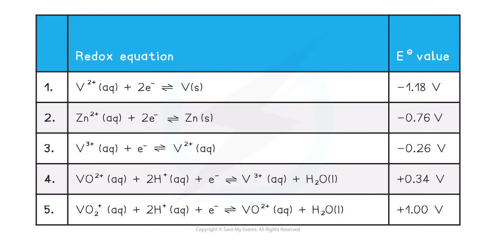
Chromium redox reactions
Important half-equations include：
\[ \ce{Cr2O7^{2-} + 14H+ + 6e- -> 2Cr^{3+} + 7H2O}\quad E^\circ=+1.33\ \mathrm{V} \]
\[ \ce{Cr^{3+} + e- -> Cr^{2+}}\quad E^\circ=-0.41\ \mathrm{V} \]
\[ \ce{CrO4^{2-} + 4H2O + 3e- -> Cr(OH)3 + 5OH-}\quad E^\circ=-0.13\ \mathrm{V} \]
\[ \ce{H2O2 + 2e- -> 2OH-}\quad E^\circ=+1.24\ \mathrm{V} \]
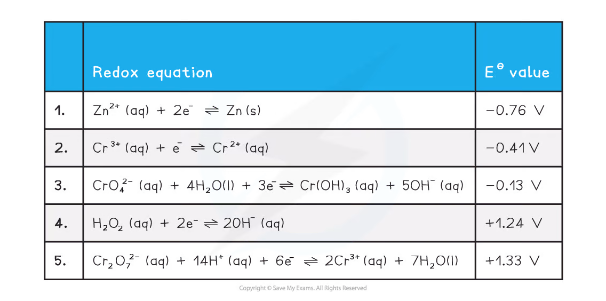
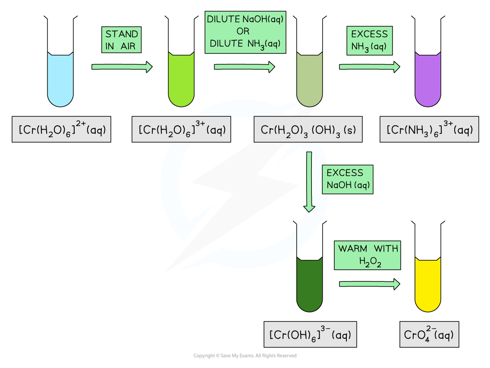
Chromate-dichromate equilibrium
\[ \ce{2CrO4^{2-}(aq) + 2H+(aq) <=> Cr2O7^{2-}(aq) + H2O(l)} \]
Chromate(VI) 是 yellow，在 alkaline conditions 稳定；dichromate(VI) 是 orange，在 acidic conditions 稳定。Adding acid shifts equilibrium right；adding alkali removes H+，shifts equilibrium left。Chromium oxidation number remains +6，因此这不是 redox reaction。
17.22-17.24 Reactions with hydroxide and ammonia
Adding aqueous sodium hydroxide 或 aqueous ammonia to transition-metal aqua ions，通常先发生 deprotonation，生成 hydroxide precipitate。Excess reagent 可能使 precipitate dissolve，形成 complex ion。
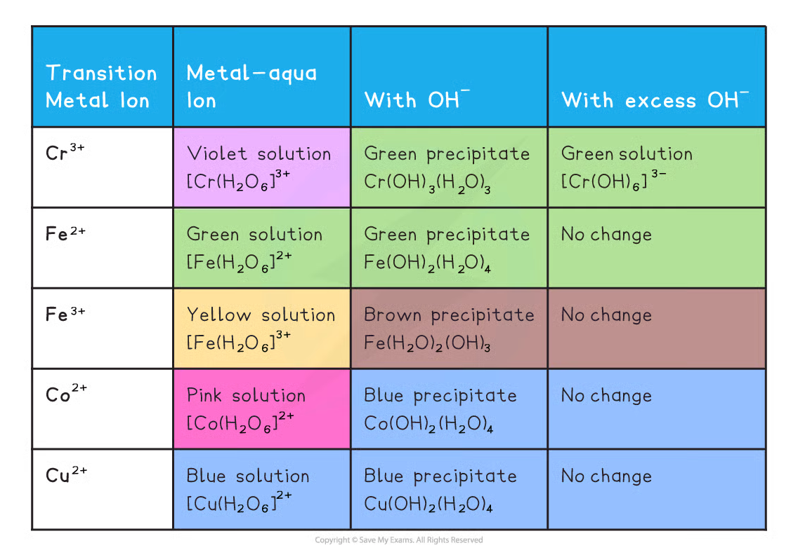
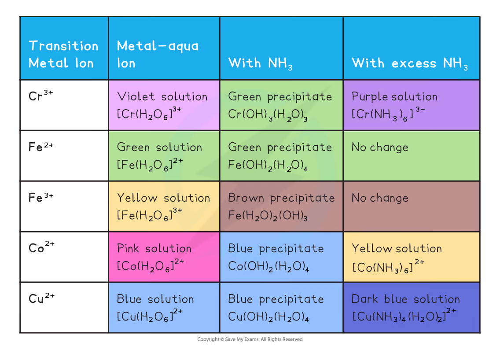
对于 Cu2+：
\[ \ce{[Cu(H2O)6]^{2+} + 2OH- -> [Cu(H2O)4(OH)2](s) + 2H2O} \]
\[ \ce{[Cu(H2O)6]^{2+} + 2NH3 -> [Cu(H2O)4(OH)2](s) + 2NH4+} \]
Chromium(III) hydroxide 表现 amphoteric behaviour：
\[ \ce{[Cr(H2O)3(OH)3](s) + 3H+ -> [Cr(H2O)6]^{3+}} \]
\[ \ce{[Cr(H2O)3(OH)3](s) + 3OH- -> [Cr(OH)6]^{3-} + 3H2O} \]
17.26-17.29 Heterogeneous catalysis
Heterogeneous catalyst 与 reactants 处于 different phases，通常是 solid catalyst + gas / solution reactants。Reaction 发生在 catalyst surface 的 active sites：
- Adsorption：reactant molecules attach to surface；
- Reaction：adsorbed bonds weakened，reactants held close / correct orientation；
- Desorption：product molecules detach from surface。
Contact process：
\[ \ce{2SO2(g) + O2(g) <=> 2SO3(g)} \]
V2O5 通过 +5 ↔︎ +4 cycle acts as heterogeneous catalyst。Catalyst 不改变 equilibrium position，只提供 lower-activation-energy pathway。
Catalytic converters
Petrol-engine exhaust 中的 CO 和 NO 可在 Pt / Rh catalyst surface 反应：
\[ \ce{2CO(g) + 2NO(g) -> 2CO2(g) + N2(g)} \]
Ceramic honeycomb support 增加 surface area，并减少 expensive precious metal 的用量。
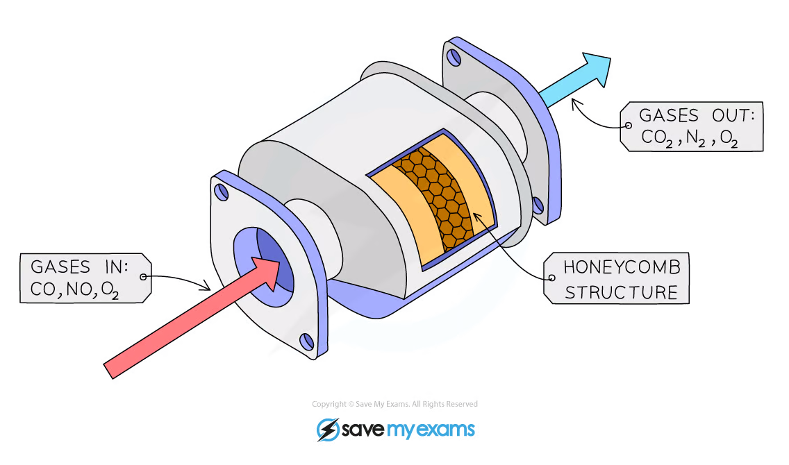
17.30-17.32 Homogeneous catalysis and autocatalysis
Iron(II) catalysis
Overall reaction：
\[ \ce{S2O8^{2-} + 2I- -> 2SO4^{2-} + I2} \]
Fe(II) / Fe(III) redox cycle：
\[ \ce{S2O8^{2-} + 2Fe^{2+} -> 2SO4^{2-} + 2Fe^{3+}} \]
\[ \ce{2I- + 2Fe^{3+} -> I2 + 2Fe^{2+}} \]
Fe(II) 被 regenerate，所以是 catalyst。Starch 可显示 iodine 形成的 blue-black colour。
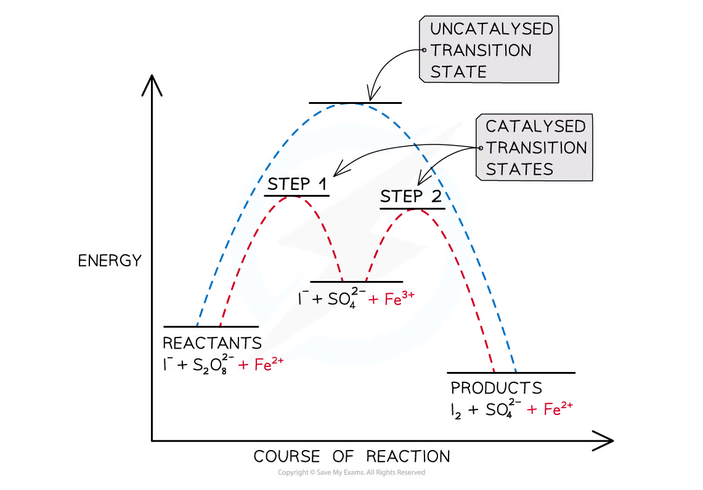
Manganese(II) autocatalysis
Autocatalysis 是 reaction product acts as catalyst，因而 reaction rate 随 reaction progress 加快。Acidified permanganate 与 oxalate 的 overall equation：
\[ \ce{5C2O4^{2-} + 2MnO4^- + 16H+ -> 10CO2 + 2Mn^{2+} + 8H2O} \]
Product Mn2+ acts as autocatalyst。开始时 Mn2+ concentration 很低，reaction slow；随着 Mn2+ 形成，rate increases。Purple MnO4- 消耗可用 colorimetry monitor。
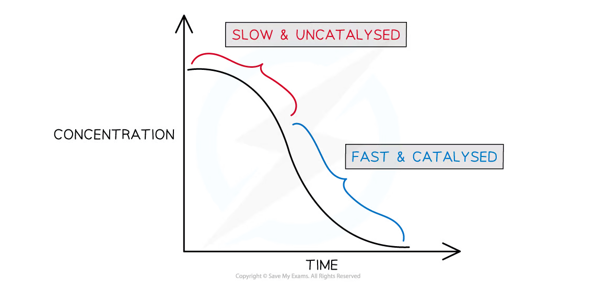
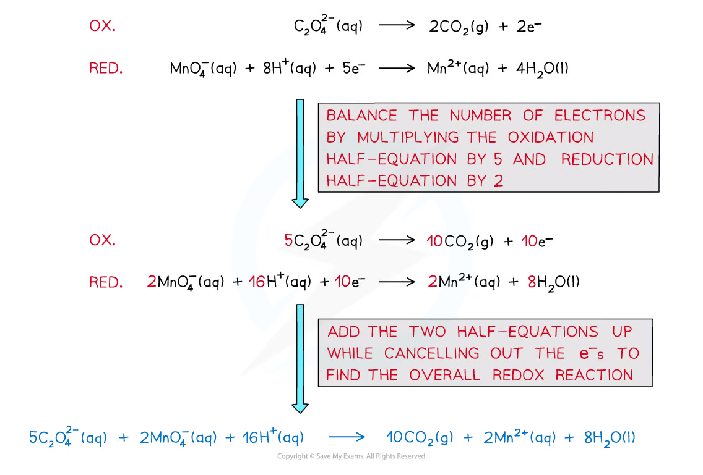
17.33 Core Practical 14
Core Practical 14 要求 prepare a transition-metal complex。Planning 和 evaluation 应包括：
- 由 ligand formula 和 required coordination number 写 complex formula；
- 按 stoichiometric ratio 称量 / 量取 metal salt 和 ligand solution；
- 控制 pH、temperature、addition order 和 reaction time；
- 通过 filtration、washing、drying / crystallisation isolate product；
- 用 mass of dry product 计算 percentage yield；
- 讨论 incomplete reaction、side reactions、product loss 和 wet crystals 对 yield 的影响；
- 使用 goggles、gloves，并根据 metal salts / ammonia / corrosive reagents 做 risk assessment。
Exam checklist
Source note
本页面对应：Note per Chapter/Note per Chapter/5.3 Transition Metal Reactions.pdf.pdf；考纲范围对应 International-A-Level-Chemistry-Spec 的 Topic 17: Transition Metals and their Chemistry。页面中的示意图均从该 note 的 PDF 内嵌图像独立提取并保存到 assets/notes/transition-metals/。